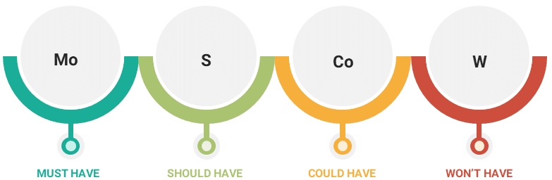

Materiais Educativos
Veja conteúdos importantes para sua introdução ao DSDM abaixo.
Introdução ao DSDM
Definição e características
Qual a diferença entre o DSDM e a metodologia tradicional?
Imagino que você deva estar se perguntando: “Qual é a diferença entre o DSDM e a metodologia tradicional?” Bom, a diferença entre eles está no princípio fundamental das metodologias e, para que você possa entender melhor, trouxemos esse esquema para você.

A metodologia tradicional, conhecida como “Waterfall” ou “cascata”, considera a funcionalidade do projeto como fixa, enquanto tempo e recursos são variáveis. Na prática, como as etapas são interdependentes, um atraso compromete o seguinte. Para lidar com isso, o DSDM inverte a lógica: fixa tempo e recursos, tornando a funcionalidade variável. Isso permite ajustes no escopo ao longo do projeto, o que é natural, já que o usuário final participa ativamente. Assim, essa abordagem se mostra bastante eficaz e gera bons resultados.
Priorização MoSCoW
MoSCoW Representa a forma de priorização de itens. No contexto do DSDM o método MoSCoW é utilizado para priorizar requisitos.
Além disso é uma técnica simples de priorização, que ajuda a entender e priorizar as tarefas a serem executadas, as letras aqui representam:
Must-Have: Os requisitos que são fundamentais e devem estar em conformidade com a solução.
Deveria ter: O que é importante para a solução de negócios.
Poderia ter: Os requisitos que são importantes, mas que podem ser facilmente deixados de lado por um curto período de tempo.
Não terá: os requisitos que podem esperar e incluir no desenvolvimento posterior.
Materiais complementares
Projetoseti - Método DSDMAgile Business - O que é o DSDM
NimbleWork - DSDM
Pontotel - Introdução ao DSDM
voitto - Artigo DSDM